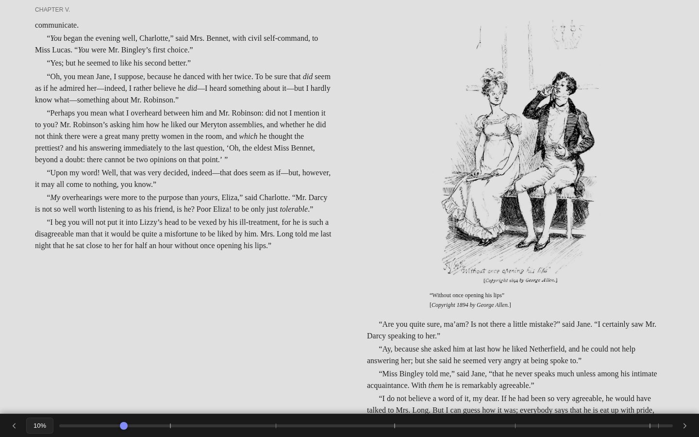
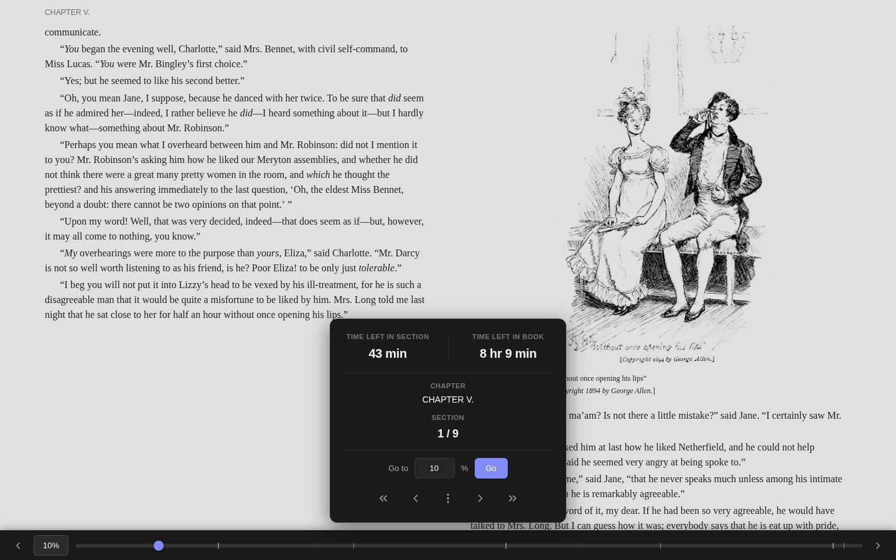
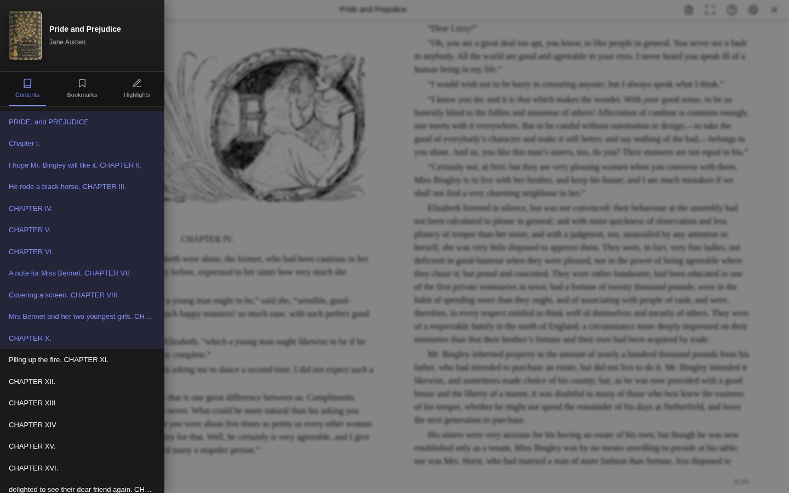
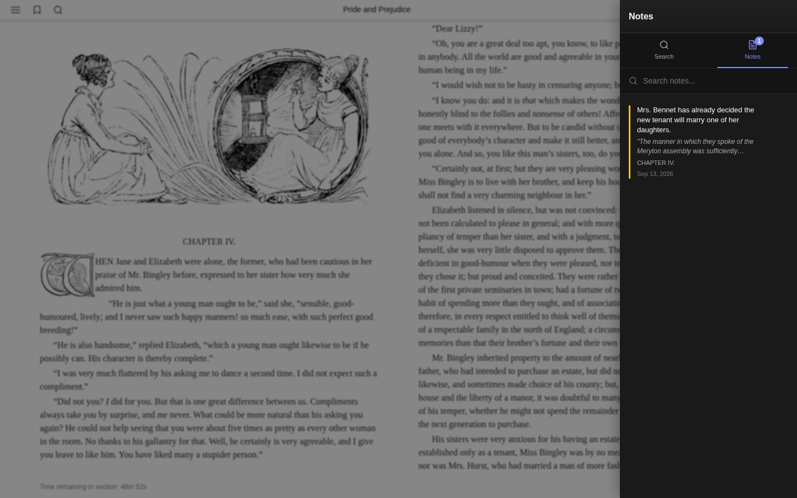
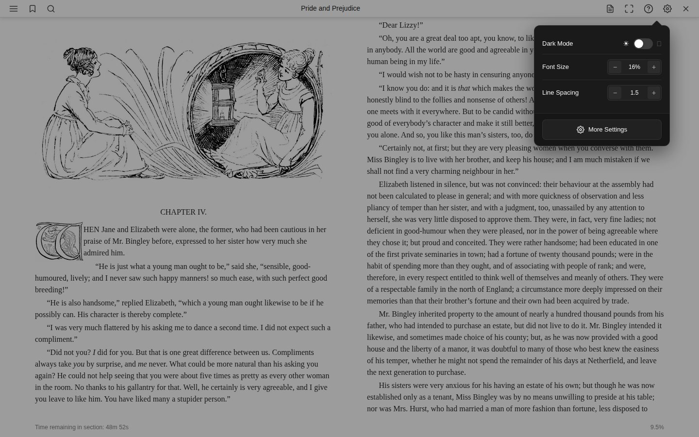
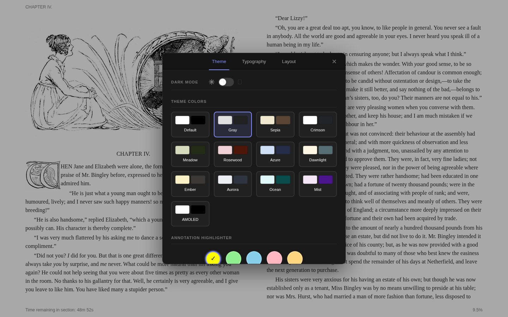
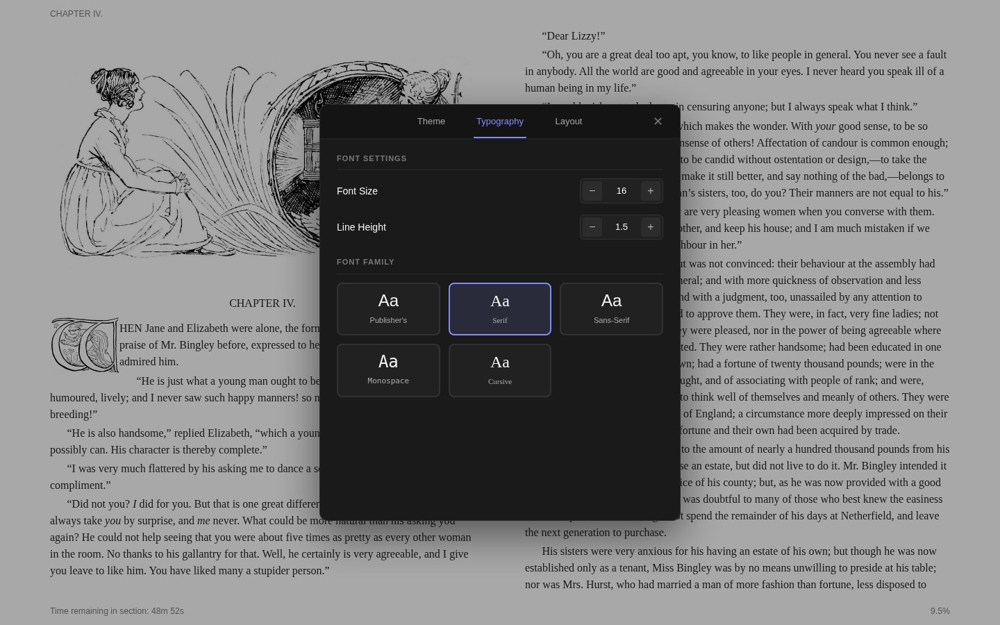
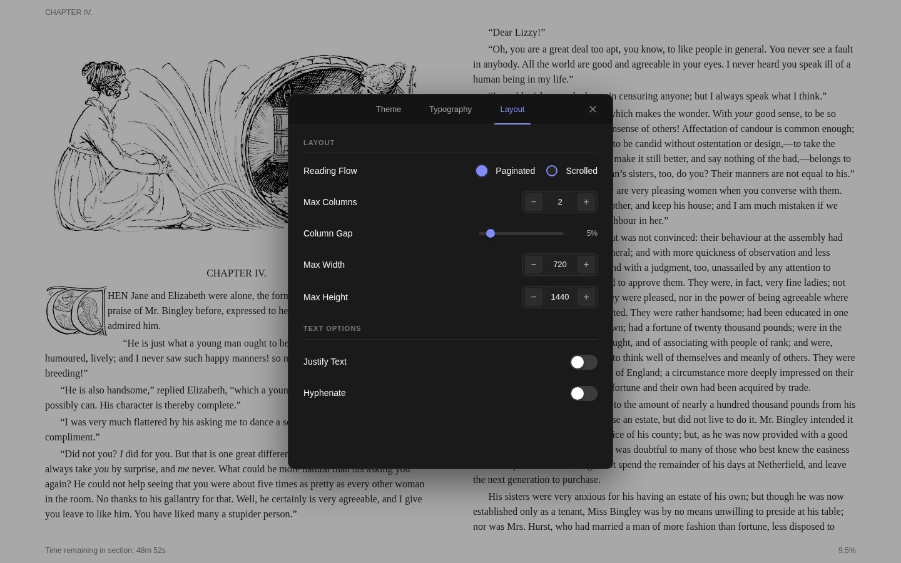

eBook reader
The eBook reader opens EPUB, MOBI, AZW3 and FB2 books, with themes, your own fonts, highlights, notes, bookmarks and search. Your place is saved as you read, so you can carry on from another device.
Reading Interface

The reader displays your book content with a toolbar at the top and a progress bar at the bottom. Both bars auto-hide in fullscreen mode and reappear when you move your mouse to the top or bottom edge, or tap the center of the screen.
Toolbar Actions
| Button | Action |
|---|---|
| Chapters | Opens the table of contents sidebar |
| Bookmark | Toggles a bookmark at the current position |
| Search | Opens the search panel |
| Notes | Opens the notes panel (desktop only) |
| Fullscreen | Enters fullscreen mode (desktop only) |
| ? | Shows keyboard shortcuts (desktop only) |
| Settings | Opens the settings dialog |
| X | Closes the reader |
On mobile, Notes, Fullscreen, and Keyboard Shortcuts are moved into an overflow menu.
Navigation
Keyboard Shortcuts
| Action | Keys |
|---|---|
| Next page | → Space Page Down |
| Previous page | ← Shift+Space Page Up |
| First section | Home |
| Last section | End |
| Toggle table of contents | T |
| Toggle search | S |
| Toggle notes | N |
| Toggle fullscreen | F |
| Close dialog / exit fullscreen | Escape |
| Show help | ? |
Click Zones
- Left 30% of the page goes to the previous page
- Right 70% goes to the next page
- Tap the center to toggle the toolbar visibility
Touch
- Swipe left for the next page
- Swipe right for the previous page
- Long press to select text
Location Popover

Click the percentage indicator in the footer to open the location popover. It shows:
- Time left in the current section and in the entire book
- Current chapter and section position (e.g., 2/15)
- Go to a specific percentage
- Navigation buttons to jump to the first, previous, next, or last section
Table of Contents

Press T or click the chapters button to open the sidebar. The TOC displays a hierarchical view of the book's structure. Chapters with sub-sections can be expanded or collapsed. The current chapter is highlighted automatically. Clicking a chapter navigates to that position.
Highlights & Annotations
Select any text to reveal the selection popup. From there you can:
- Highlight the text with a chosen style and color
- Add a note (opens a note dialog)
- Copy the text
Highlight Styles
Four annotation styles are available:
| Style | Description |
|---|---|
| Highlight | Colored background behind text |
| Underline | Solid line under text |
| Squiggly | Wavy underline |
| Strikethrough | Line through text |
Each style supports five colors: Yellow, Green, Blue, Pink, and Orange.
To delete a highlight, select the highlighted text and click the delete button in the popup, or use the trash icon in the sidebar highlights list.
Notes

Select text and click the note button to create a note. Each note stores:
- The selected text passage
- Your note content
- A color label (Amber, Green, Blue, Pink, Purple, or Deep Orange)
View and manage all notes by pressing N or clicking the notes icon. The notes panel includes a search box to filter notes by content. Click a note to jump to its position in the book, or use the edit and delete buttons.
Bookmarks
Click the bookmark icon in the toolbar to bookmark your current position. A filled bookmark icon indicates the current location is bookmarked. View all bookmarks in the sidebar under the Bookmarks tab. Click any bookmark to jump to that location.
Search
Press S or click the search icon to open the search panel. Type at least 3 characters to start searching. Results appear with surrounding context and the matching section name. Click a result to navigate directly to that position. A progress indicator shows how far through the book the search has progressed.
Settings
Quick Settings

The settings icon opens a quick panel with the most common options: dark mode toggle, font size, and line spacing. Click More Settings to access the full settings dialog.
Theme

Toggle between light and dark mode, then pick from 13 theme color presets:
| Theme | Theme | Theme |
|---|---|---|
| Default | Gray | Sepia |
| Crimson | Meadow | Rosewood |
| Azure | Dawnlight | Ember |
| Aurora | Ocean | Mist |
| AMOLED |
Below the themes, choose a default annotation highlighter color (Yellow, Green, Blue, Pink, or Orange).
Typography

| Setting | Range | Default |
|---|---|---|
| Font Size | 10 – 32 | 16 |
| Line Height | 0.8 – 3.0 | 1.5 |
Font family options: Publisher's (uses the book's embedded fonts), Serif, Sans-Serif, Monospace, Cursive, and any custom fonts you've uploaded.
Layout

| Setting | Range | Default |
|---|---|---|
| Reading Flow | Paginated / Scrolled | Paginated |
| Max Columns | 1 – 10 | 2 |
| Column Gap | 0 – 50% | 5% |
| Max Width | 400 – 1600 px | 720 px |
| Max Height | 600 – 2400 px | 1440 px |
| Justify Text | On / Off | On |
| Hyphenate | On / Off | Off |
Paginated mode displays content in discrete pages you flip through. Scrolled mode renders the book as a continuous scrollable document.
Settings Persistence
Reader settings can be saved per book or as global defaults. When you open a book that has per-book settings saved, those take priority over the global defaults.
Reading Progress
Progress is saved automatically as you read. When you reopen a book, the reader returns to your exact position. The footer progress bar and percentage display update in real time.
Reading sessions are tracked in the background: each time you open the reader, a session is recorded with start/end times and positions. These sessions appear in the book's Metadata Center under the Reading Sessions tab.
Large books
For a very large EPUB (one full of pictures, say), choose Streaming Reader from the menu beside the Read button on the book's page. It fetches the book a chapter at a time instead of downloading all of it before showing the first page.